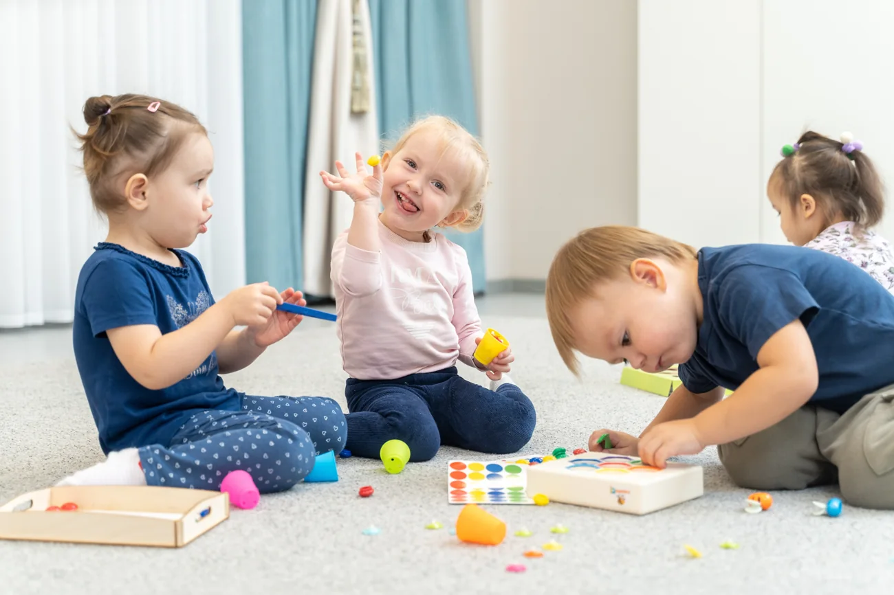

Планирование в центрах активности
Дети выбирают задачу, намечают план и работают небольшими группами. В центрах можно строить, рисовать, исследовать природу или играть по ролям.
Дошкольное образование
Через игру дети учатся выбирать занятие, планировать, договариваться и рассказывать о том, что узнали.

Дети выбирают задачу, намечают план и работают небольшими группами. В центрах можно строить, рисовать, исследовать природу или играть по ролям.
Педагог читает с детьми истории, обсуждает героев и события. Дети учатся пересказывать и придумывать собственные сюжеты.
Дети отмечают прошедшие и будущие события, замечают порядок дней и осваивают счёт.
Задания с линиями и формами помогают развивать координацию и готовить руку к письму.
Дети всматриваются в детали знакомых предметов, описывают увиденное и задают вопросы.
Ребята сравнивают признаки предметов, предлагают догадки и объясняют, почему выбрали свой ответ.
Образовательные программы, учебные планы, графики и методические документы открываются в сведениях о выбранном саде.